Wie alles zusammenspielt
Welcher Teil von Atalaia mit welchem spricht, über welche Verbindung und was darüber läuft. Unter jedem Diagramm: was fließt und was nicht.
Atalaia ist Pre-Alpha. Auf echten Boards am Teststand liefen: Start, Funk, Tasten und Tastenfeld, Aufnahme, ein Update über die Luft und ganze Spiele mit dem Feld-Controller. Die iOS-App hat ihre Checkliste auf einem iPhone bestanden. Alles andere ist nur in Software gebaut und getestet.
So liest du das erste Diagramm: Eine durchgezogene Linie funktioniert ohne Internet auf dem Feld, eine gestrichelte braucht Internet.
1 · Das ganze System

Was fließt
Der Spielverkehr bleibt auf dem Feld. Boxen und Controller sprechen über LoRa durch das USB-Modem. GM-Konsole, App der Spielenden, Android-Props und die Dateien, die eine Box abholt, nutzen das Wi-Fi des Feldes.
Was nicht fließt
- Im Spiel wartet nichts auf das Internet. Der Site-Server ist optional.
- Die Positionen der Spielenden gehen nie über LoRa oder MQTT.
- Der Site-Server verbindet sich nie mit dem Controller: Der Controller öffnet die Verbindung immer selbst.
- Boxen sprechen nie mit dem Internet. Der Controller holt Modi, und eine Person lädt die Firmware hoch.
2 · Die Funkschichten

Was fließt
Jedes Paket wird mit AES-128-CCM unter dem Spielschlüssel verschlüsselt und geprüft. Das Modem versiegelt und öffnet die Pakete, darum sprechen Controller und Modem über das Kabel im Klartext. Boxen wiederholen die Pakete der anderen.
Was nicht fließt
- Keine Positionen, Namen, Tokens, WLAN-Passwörter, Firmware-Images oder Modus-Pakete gehen über LoRa.
- Große Dateien werden über HTTPS geholt. Nur ein kurzes Angebot oder ein Fehlerbericht nutzt LoRa.
3 · Ein Spiel, von der Einladung bis zum Ende


Was fließt
Eine freie Box meldet sich, die Spielleitung lädt sie ein. Die Join-Nutzlast (Spiel-ID und -Schlüssel, Rolle, Teams, Kanal) kommt versiegelt an. Das Spiel startet erst, wenn jede Rolle eine Box hat. Danach senden die Boxen Ereignisse und alle 15 s einen STATE.
Was nicht fließt
- Die GM-Konsole spricht nie LoRa: Sie redet nur mit dem Controller.
- Der Spielschlüssel reist nur in der versiegelten Einladung (oder auf einer Karte), nie in einer Ankündigung.
4 · Spielende am Spieltag


Was fließt
Wer spielt, scannt das Plakat, pinnt die CA des Feldes, checkt ein und bekommt ein Token. Die App folgt dann dem Live-Stream. Ein Marshal signiert Chrono-Messwerte auf dem eigenen Handy.
Was nicht fließt
- Positionen gehen nie über LoRa oder MQTT und erreichen nie Spielende anderer Rollen.
- Es braucht kein Internet: All das funktioniert bei ausgeschaltetem Site-Server.
5 · Controller und Site-Server


Was fließt
Der Controller schickt Spiele, Ereignisse, Punkte, Knoten und Chrono-Einträge alle 30 s im Spiel und alle 5 min zwischen den Spielen. Er holt Termine, Teilnehmerlisten und Einstellungen. Ein Stream trägt die Live-Ansicht und die Befehle des Remote-GM, die der Controller noch einmal prüft.
Was nicht fließt
- Der Site-Server verbindet sich nie mit dem Controller und hält weder Spielschlüssel noch Join-Schlüssel oder Tokens.
- Offline ist der Normalfall: Ereignisse warten und gehen später der Reihe nach raus.
- Positionen verlassen den Controller nur in zwei optionalen Fällen (Remote-GM, Remote-ATAK-Relay), im Arbeitsspeicher.
6 · Dinge auf eine Box bringen

Was fließt
Release- und Modus-Schlüssel signieren die Dateien, ihre öffentlichen Hälften sind in die Box eingebaut. Eine Person lädt die signierte Firmware herunter und beim Controller hoch. Der Controller bietet das Update über LoRa an, die Box holt es über das Wi-Fi des Feldes. Eine Box wird per USB-Kabel, NFC-Karte oder Kopplungscode aufgenommen.
Was nicht fließt
- Die Signatur, nicht der Kanal, macht eine Datei sicher: Die Box entscheidet mit den Schlüsseln in ihrer eigenen Firmware, bevor sie ein Byte schreibt.
- Der Controller lädt nie Firmware von GitHub herunter.
- Release-Schlüssel und Modus-Schlüssel sind getrennte Schlüssel.
7 · Login und Konten auf dem Site-Server

Was fließt
Ein kurzlebiges Zugriffs-Token plus ein Refresh-Token, das bei jeder Nutzung ersetzt wird. Rollen der Orga zählen nur in einer Sitzung mit zweitem Faktor (TOTP oder Passkey). Ein Social-Login allein ist kein zweiter Faktor.
Was nicht fließt
- Der Controller nutzt diese Konten nicht: Er nutzt den API-Schlüssel des Feldes.
- Ein Social-Anbieter wird nur vom Browser der Person und vom Site-Server angesprochen, nie von einem Controller, einer Box oder einem Modem.